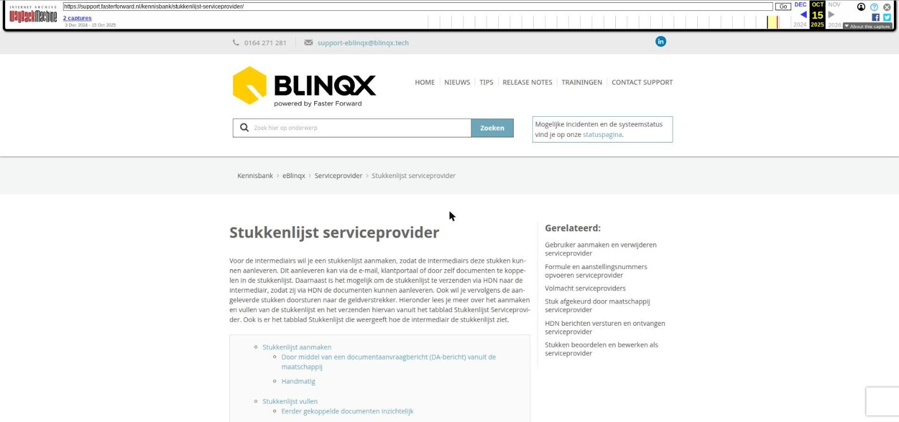

Stukkenlijst serviceprovider

Tekstinhoud
Stukkenlijst serviceprovider
Voor de intermediairs wil je een stukkenlijst aanmaken, zodat de intermediairs deze stukken kunnen aanleveren. Dit aanleveren kan via de e-mail, klantportaal of door zelf documenten te koppelen in de stukkenlijst. Daarnaast is het mogelijk om de stukkenlijst te verzenden via HDN naar de intermediair, zodat zij via HDN de documenten kunnen aanleveren. Ook wil je vervolgens de aangeleverde stukken doorsturen naar de geldverstrekker. Hieronder lees je meer over het aanmaken en vullen van de stukkenlijst en het verzenden hiervan vanuit het tabblad Stukkenlijst Serviceprovider. Ook is er het tabblad Stukkenlijst die weergeeft hoe de intermediair de stukkenlijst ziet.
Stukkenlijst aanmaken
Door middel van een documentaanvraagbericht (DA-bericht) vanuit de maatschappij
Handmatig
Stukkenlijst vullen
Eerder gekoppelde documenten inzichtelijk
Stuk beoordelen en status aanpassen
Status stuk aanpassen
Status handmatig aanpassen
Status stuk volmacht handmatig aanpassen
Status aangepast na aanlevering document
Status aangepast aan de hand van beoordeling maatschappij
Stuk afgekeurd door maatschappij
Stukkenlijst verzenden
Stukken opvragen (DA-bericht) bij intermediair
Stukken versturen (DX-bericht) naar maatschappij
Vanuit de stukkenlijst
Vanuit workflow
Controle DX en DA verzonden
DX-bericht wel of niet verzonden
Voorwaarden
Aanwezigheid formule
Aanlevermoment document instellen
Documenten verplaatsen naar andere stukkenlijst
Stukken verwijderen
Vervallen stukken
Melding stukkenlijst niet up-to-date
Stukkenlijst aanmaken
De stukkenlijst kan aangemaakt worden op verschillende manieren, namelijk:
Door middel van een documentaanvraagbericht (DA-bericht) vanuit de maatschappij
Handmatig
Door middel van een documentaanvraagbericht (DA-bericht) vanuit de maatschappij
De maatschappij vraagt stukken op en doet dit via HDN middels een DA-bericht. Dit DA-bericht komt binnen in de HDN inbox. Er wordt gekeken of de opgevraagde stukken al aanwezig zijn in de stukkenlijst van het dossier. Is dit niet het geval dan worden er nieuwe stukken in de stukkenlijst aangemaakt. Is dit wel het geval dan wordt het opgevraagde stuk door de maatschappij samengevoegd met het bestaande stuk in het dossier. Hier lees je er meer over.
Handmatig
In het tabblad Stukkenlijst – Stukkenlijst serviceprovider is het mogelijk om handmatig een stukkenlijst aan te maken. Dit door te klikken op het plusje links bovenin. Vervolgens kies je de hypotheekaanvraag en eventueel een template.
Ook kan je losse documenten toevoegen aan de stukkenlijst. Dit door rechts de documenten te selecteren en vervolgens te klikken op 'Kies selectie'.
Stukkenlijst vullen
Aan de stukken moeten documenten worden gekoppeld. Deze documenten kunnen op verschillende manieren aangeleverd worden door de intermediair en vanuit daar gekoppeld worden aan een stuk, namelijk via:
Koppelen vanuit een e-mail
Uploaden vanuit Uwkluis
Uploaden in het "Stuk bewerken scherm"
Koppelen vanuit het tabblad Documenten
Ontvangen via HDN (DX of OX bericht)
Bij het samenvoegen van de stukkenlijst
Koppelen van het document vanuit de scaninbox
API
Er zijn wat voorwaarden aan het koppelen van een document. Zo is het alleen mogelijk om een document aan het stuk te koppelen, wanneer de 'Beoordeling SP' één van de volgende statussen heeft:
Aan te leveren
Afgekeurd en opnieuw aan te leveren (zie toelichting)
In behandeling
Ontvangen
Bij een andere status (Voorlopig akkoord, Akkoord of Vervallen, zie toelichting) is het niet mogelijk om een document te koppelen.
Als het document ontvangen wordt via HDN (DX of OX bericht) dan worden er nog wat extra controles uitgevoerd. Hier lees je er meer over.
Eerder gekoppelde documenten inzichtelijk
Het kan voorkomen dat er meerdere documenten gekoppeld zijn geweest aan het stuk. Wanneer je op de status in de kolom Beoordeling SP klikt dan kan je onder 'Stuk historie (link plaatsen)' zien welke documenten gekoppeld zijn geweest aan het bericht. Ook kan je hier een eerder aangeleverd document herkoppelen.
Stuk beoordelen en status aanpassen
Status stuk aanpassen
Stukken moeten een status hebben. Zo weet de intermediair en de geldverstrekker waar ze aan toe zijn wat betreft de behandeling van het stuk. Wanneer er een stukkenlijst wordt aangemaakt dan krijgen de stukken automatisch de status 'Aan te leveren' met de datum en tijd van aanmaken.
Status handmatig aanpassen
Je kan de status van het stuk aanpassen door te klikken op de status onder de kolom 'Beoordeling SP'.
Status stuk volmacht handmatig aanpassen
Als volmacht mag je de status van de maatschappij van het stuk in Elements aanpassen. Je kunt hiervoor klikken op de status in de kolom 'Beoordeling MIJ'. De 'Beoordeling MIJ' wordt pas klikbaar als in de productkaart 'Volmacht' op 'Ja' staat en je hiervoor de juiste rechten hebt.
In dit artikel lees je meer over onder andere het handmatig aanpassen van de status.
Status aangepast na aanlevering document
Een document kan op verschillende manieren, wanneer deze voldoet aan de voorwaarden, aan een stuk gekoppeld worden. Wanneer het document wordt toegevoegd aan het stuk dan wordt de 'Beoordeling SP' aangepast naar 'Ontvangen'. Ook wordt de datum ontvangst aangepast naar 'nu'. Het toelichtingsveld wordt leeggemaakt en er wordt eventueel automatisch een DA bericht verzonden.
Status aangepast aan de hand van beoordeling maatschappij
De maatschappij stuurt DA berichten terug met daarin de beoordeling van de maatschappij. Echter de maatschappij stuurt niet de beoordeling van de serviceprovider mee. Elements past automatisch de beoordeling van de serviceprovider aan de hand van de status die meegestuurd wordt door de maatschappij aan. Wanneer je als volmacht het stuk hebt beoordeeld met 'Voorlopig akkoord' dan wil je niet dat een andere status van de maatschappij dit overschrijft. Elements laat dan de status op 'Voorlopig akkoord staan'. Dit ziet er als volgt uit:
Niet volmachtaanvraag
Status DA bericht / Status beoordeling maatschappij / Status serviceprovider:
01 Aan te leveren / Aan te leveren / de huidige status blijft ongewijzigd
02 In behandeling / In behandeling / de huidige status blijft ongewijzigd
03 Ontvangen / Ontvangen / de huidige status blijft ongewijzigd
04 Akkoord / Akkoord / Akkoord
06 Voorlopig akkoord / Voorlopig akkoord / Voorlopig akkoord
07 Afgekeurd en opnieuw aan te leveren (zie toelichting) / de huidige status blijft ongewijzigd / de huidige status blijft ongewijzigd
08 Vervallen (zie toelichting) / Vervallen, zie toelichting / Vervallen, zie toelichting
Volmacht aanvraag
Status DA bericht / Status beoordeling maatschappij / Status serviceprovider:
01 Aan te leveren / Indien op Voorlopig akkoord dan huidige status ongewijzigd, anders Aan te leveren / de huidige status blijft ongewijzigd
02 In behandeling / Indien op Voorlopig akkoord dan huidige status ongewijzigd, anders In behandeling / de huidige status blijft ongewijzigd
03 Ontvangen / Indien op Voorlopig akkoord dan huidige status ongewijzigd, anders Ontvangen / de huidige status blijft ongewijzigd
04 Akkoord / Akkoord / Akkoord
06 Voorlopig akkoord / Voorlopig akkoord / Voorlopig akkoord
07 Afgekeurd en opnieuw aan te leveren (zie toelichting) / de huidige status blijft ongewijzigd / de huidige status blijft ongewijzigd
08 Vervallen (zie toelichting) / Vervallen, zie toelichting / Vervallen, zie toelichting
Indien de beoordeling maatschappij en/of de beoordeling serviceprovider wordt overschreven door de status in het DA-bericht dan wordt de documentstatusdatum vanuit DA-bericht overgenomen als beoordelingsdatum voor het stuk.
Al het document de status 'Vervallen' krijgt en het stuk moest nog aangeleverd worden dan krijgt het stuk in de kolom Ontvangst de status 'Niet aan te leveren'.
Stuk afgekeurd door maatschappij
Het kan voorkomen dat de maatschappij het stuk afkeurt, maar dat dit onterecht is. Als serviceprovider wil je dit stuk eerst bespreken met de maatschappij, voordat je de status terugkoppelt naar de intermediair. Om te voorkomen dat de intermediair de status 'Afgekeurd en opnieuw aan te leveren (zie toelichting) direct ziet, krijgt het stuk de status 'Afgewezen nog te beoordelen'. Hier vind je meer informatie over deze status en hoe je deze verder in behandeling kunt nemen.
Stukkenlijst verzenden
Stukken opvragen (DA-bericht) bij intermediair
Vanuit het klantdossier – tabblad Stukkenlijst – Stukkenlijst Serviceprovider is het mogelijk om de stukken te verzenden naar de intermediair of geldverstrekker. Hier vink je de stukken die je wilt verzenden aan en vervolgens kies je voor 'Verstuur stukkenlijst naar intermediair' om de stukken bij de intermediair op te vragen.
Let op: alleen stukkenlijsten gekoppeld aan een ontvangen hypotheekaanvraag kunnen verzonden worden. De intermediair is het kantoor waaraan het klantdossier gekoppeld is. Dit kan je zien in de header.
Intermediair gekoppeld aan dossier
Nadat je op de knop 'Verstuur stukkenlijst naar intermediair' hebt geklikt, komt er een nieuw scherm zichtbaar. Hier kies je het product waaraan de stukkenlijst is gekoppeld.
Na het kiezen van het product wordt de knop 'Verzenden' beschikbaar. Ook is er de knop 'Annuleren' om het verzenden van de stukkenlijst te annuleren. Wanneer je op de knop 'Verzenden' klikt, wordt het DA bericht klaargezet voor verzending naar het intermediair. Dit bericht is zichtbaar onder het tabblad HDN onder het product. Hier kan je de status zien. Er zal eerst een zandloper zichtbaar zijn (bericht staat klaar voor verzending) en vervolgens een groen vinkje als het bericht verzonden is.
Stukken versturen (DX-bericht) naar maatschappij
Vanuit de stukkenlijst
In de stukkenlijst kan je ook kiezen voor 'Verstuur stukken naar de maatschappij'. Je komt vervolgens in een nieuw scherm waarin je kan aangeven welke documenten je naar de maatschappij wilt verzenden. De stukken waaraan een document is gekoppeld, die beoordeeld zijn en daarnaast door de maatschappij zijn opgevraagd middels een DA bericht kunnen verzonden worden.
Vanuit workflow
Ook is het mogelijk de documenten te versturen vanuit de workflow. In de workflow heb je de keuze om alleen beoordeelde stukken te versturen of alle stukken te versturen.
Alleen beoordeelde stukken versturen.
In de stukkenlijst heb je de mogelijkheid om te kiezen welke documenten je naar de maatschappij wilt versturen. Wanneer je de documenten vanuit de workflow naar de maatschappij verstuurt dan heb je deze keuze niet. Alle documenten die voldoen aan de volgende voorwaarden worden verstuurd:
Er is een document gekoppeld aan het stuk
De status van Beoordeling SP is 'Voorlopig akkoord'
Als het een volmachtaanvraag betreft heeft ook de Beoordeling Mij de status 'Voorlopig akkoord'
De documentstatus van de maatschappij is 'Aan te leveren' of 'Afgekeurd opnieuw aan te leveren'
Alle stukken versturen
Alles stukken worden verstuurd ongeacht de beoordeling van de serviceprovider en volmacht.
Voor beide opties geldt dat de stukken die gekoppeld zijn aan een bankgarantie worden uitgesloten. Het bericht zal pas worden verstuurd als het laatste binnengekomen DA-bericht is verwerkt.
Controle DX en DA verzonden
In de stukkenlijst staat de kolom DA verzonden en DX verzonden. In de kolom DA verzonden zie je de datum en tijd van het meest recente DA bericht dat verzonden is naar het intermediair. In de kolom DX verzonden zie je de datum en tijd van het meest recente DX-bericht van dit stuk dat is verzonden naar de maatschappij. Wanneer je met jouw muis op de datum gaat staan, zie je de status die de maatschappij heeft meegestuurd in het laatst ontvangen DA-bericht.
DX-bericht wel of niet verzonden
In de DX-kolom komt een kruis te staan, wanneer het niet gelukt is om het DX bericht te verzenden. Het DX-bericht staat in de HDN inbox – Uitgaand mislukt. Door op het kruisje te klikken kom je hier direct terecht. Er komt een vinkje te staan wanneer het stuk is verzonden en is ontvangen door de maatschappij. De documentstatus is dan Ontvangen, In behandeling, Voorlopig akkoord of Akkoord. Het vinkje verdwijnt wanneer er een DA-bericht terugkomt met daarin de beoordeling maatschappij op 'Afgekeurd, opnieuw aan te leveren' of 'Vervallen (zie toelichting)'. Of wanneer er een nieuw DX-bericht van het betreffende stuk wordt verstuurd.
Voorwaarden
Aanwezigheid formule
Het DA-bericht dat wordt klaargezet, hangt samen met de formule wat onder de intermediair staat ingesteld. Wanneer er geen formule onder de intermediair staat ingesteld dan verschijnt er een foutmelding en is het niet mogelijk om de documentaanvraag te verzenden.
Aanlevermoment document instellen
Bij de documenten met het protocol HDN kan je een aanlevermoment selecteren. Dit is niet verplicht. Het aanlevermoment kan je instellen in Beheer – Soort documenten beheer. Je zoekt hier het document op en klikt op het wijzigingsicoon. Hier staat 'Aanlevermoment' en door middel van het dropdownmenu kan je het aanlevermoment selecteren. De keuzes zijn:
Voor indicatief rentevoorstel: het document moet ontvangen worden voordat het indicatieve rentevoorstel verzonden kan worden.
Voor bindende offerte: het document moet ontvangen worden voordat de bindende offerte verzonden kan worden.
Na bindende offerte en voor passeren: het document moet ontvangen worden nadat de bindende offerte is uitgebracht, maar voor de beoordeling van het dossier.
Na passeren: het document mag aangeleverd worden na het passeren van de hypotheekakte.
Optioneel aan te leveren
Documenten verplaatsen naar andere stukkenlijst
Het is mogelijk om de documenten die staan onder de ene stukkenlijst te verplaatsen naar een andere stukkenlijst. Dit kan wenselijk zijn als er sprake is van twee aanvragen. De eerste aanvraag wordt afgekeurd, maar onder deze aanvraag staat een bruikbare stukkenlijst. Via deze functie is het handig om de documenten gekoppeld aan de stukkenlijst onder de eerste aanvraag over te zetten naar de stukkenlijst onder de tweede aanvraag. Hier lees je er meer over.
Stukken verwijderen
Wanneer de maatschappij een DA-bericht heeft gestuurd met daarin het betreffende stuk dan is het niet mogelijk om het stuk handmatig te verwijderen. Deze kunnen dan alleen door middel van de workflow verwijderd worden. Dit gebeurt 1 maand na het passeren van de hypotheek of wanneer de aanvraag niet doorgaat.
Het is mogelijk om stukken uit de stukkenlijst te verwijderen door middel van het rode kruisje als het gaat om eigen toegevoegde stukken. Indien het betreffende stuk reeds verzonden is met een DA bericht naar de intermediair en je verwijdert deze dan stuurt Elements automatisch een DA bericht naar de intermediair. Het verwijderde stuk krijgt dan de status 'Vervallen'. Wanneer er meerdere stukken (die al eerder via een DA bericht zijn verzonden) worden verwijderd dan zit er een interval van 15 minuten tussen de automatisch verstuurde DA berichten. Per verwijderd stuk wordt er een apart DA bericht verzonden.
Vervallen stukken
In de stukkenlijst worden ook de stukken met de status Vervallen getoond. Deze vervallen stukken kunnen niet bewerkt of verwijderd worden. Daarnaast kan je er geen documenten onder uploaden en het geldigsheidsicoon is niet zichtbaar. De vervallen stukken worden wel meegestuurd in DA-berichten naar de intermediair.
Melding stukkenlijst niet up-to-date
In de stukkenlijst kan een blauwe melding verschijnen die aangeeft dat de stukkenlijst niet up-to-date is. Deze melding verschijnt wanneer er in de HDN inbox nog DA-berichten staan die niet zijn verwerkt. Wanneer je de juiste rechten hebt, kan je vanuit deze melding direct doorklikken naar de betreffende berichten.
Laatste update: 21 oktober 2024
Was deze informatie nuttig?
Ja Nee